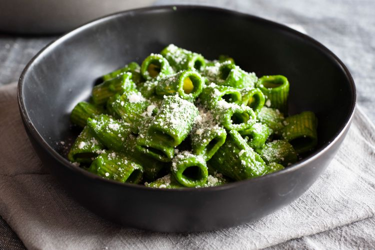

Pasta

Easy Pasta with greens
This striking pasta comes together faster than you'd think.
Blanch Swiss chard in your boiling water before cooking the pasta. Then blend it with some pasta cooking water with lemon juice and zest, garlic, and a little Parm.
Ingredients
- 2 bunches (about 20 ounces) white or yellow-stemmed Swiss chard
- 1/4 cup extra virgin olive oil
- 3 large cloves garlic, smashed
- 1/4 teaspoon red pepper flakes, or to taste
- 1/2 teaspoon kosher salt, or to taste, plus more for cooking pasta
- 12 ounces dry pasta like rigatoni or orecchiette
- 2 tablespoons fresh lemon juice
- 1/2 cup finely grated Parmesan cheese, plus more for garnish
Steps
- Cook Macaroni in a large pot of salted water until barely al dente, follow cooking time on the package of pasta.
If you're using Fiber Gourmet Light Elbows for the pasta that might take as long as 15 minutes before reaching al dente.
- Reserve 1/4 cup cooking water before draining.
- While pasta cooks, zest the lemon and squeeze the juice and finely chop the garlic if using fresh garlic.
- Wash greens in a salad spinner if needed and spin dry.
- If using larger greens, slice crosswise into 1 inch wide ribbons, discarding stems. (Baby greens may not be sliced.)
- Heat olive oil in large frying pan, add garlic and lemon zest and saute 1 minute.
- Add greens and saute until wilted, about 5 minutes for larger greens or 2-3 minutes for baby greens.
- As soon as pasta is al dente, save 1/4 cup cooking water and then drain the pasta well and add to greens/garlic/lemon mixture, with lemon juice and reserved pasta cooking water (as needed.)
- Stir in Parmesan cheese and serve hot, with additional cheese to be added at the table if desired.
Home